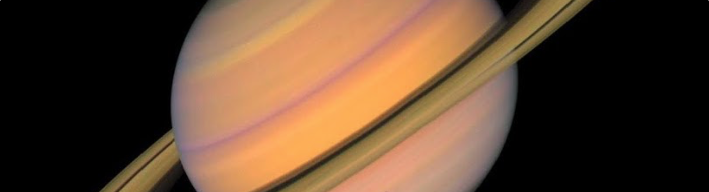
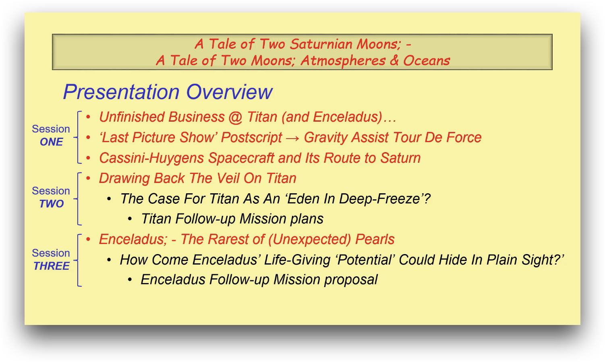
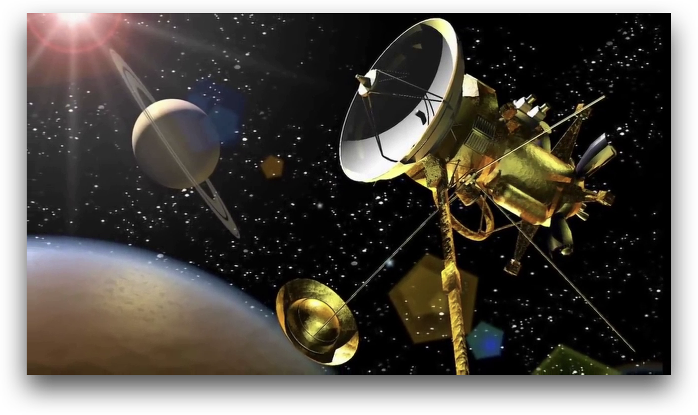
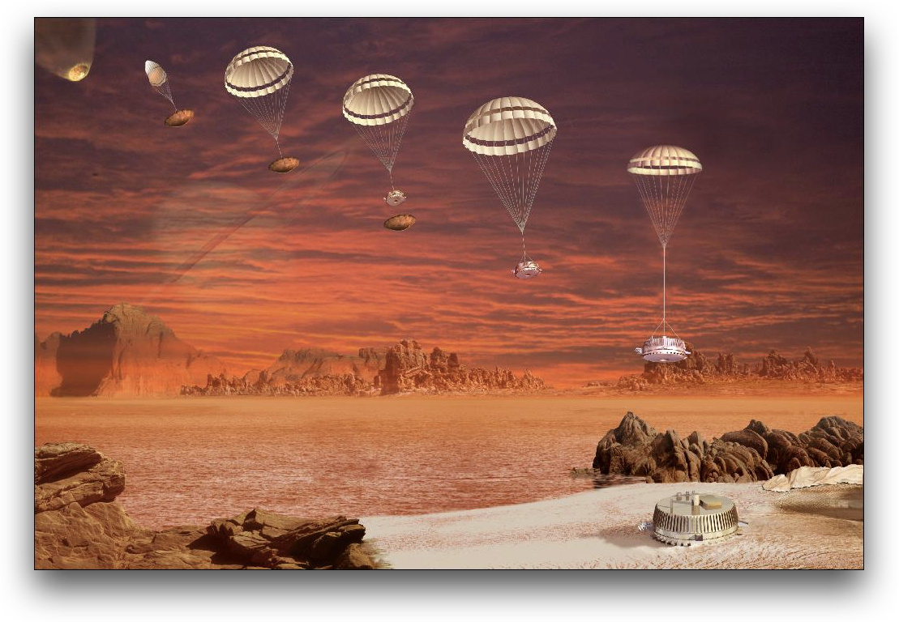
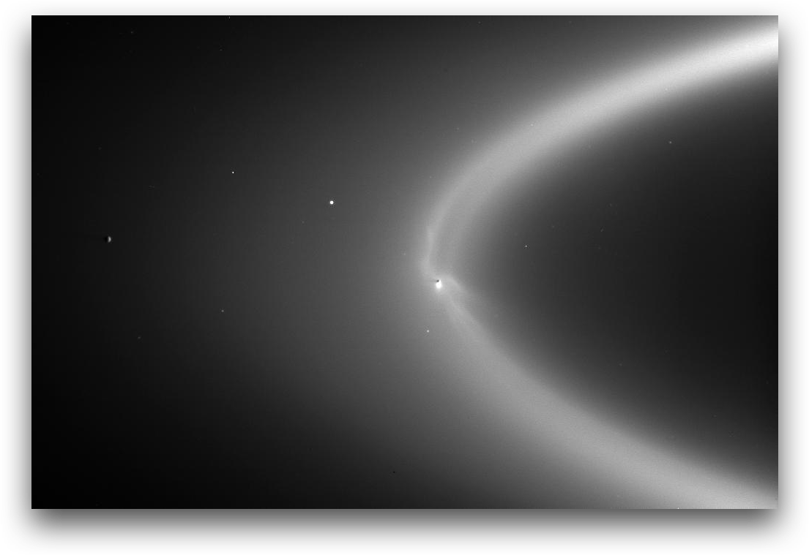

Remote Sensing Of The Saturnian System - A Tale Of Two Moons
You may have noticed that whereas there is usually at least two weeks between talks, the final event of this year is a little early. That means there are no programmed lectures between December 8th and January 12th. However, with the kind permission of Dr Graeme Awcock, who is an Honorary Fellow of the School of Environment and Technology at the University of Brighton, we have three recorded lectures for you to view over the holiday period. Some of you may recall Graeme’s talks to us in past years on imaging technology and remote sensing. He has recently developed three, one hour talks under the heading ‘Remote Sensing of the Saturnian System - A Tale of Two Moons’ and made them available to IET Sussex members between Christmas and the New Year. Due to copyright reasons, each talk will only be available for a 48 hour period, the first on the 27th/28th December, the second on 29th/30th and the final one on 31st December and 1st January.
The following gives you details of each of the talks, the time for which each is available and the link to access each video.

Session ONE: Return to Saturn
This, the first of three sessions of this “Remote Sensing of the Saturnian System - A Tale of Two Moons: Atmospheres and Oceans” presentation by Dr Graeme Awcock starts with a very brief introduction to the speaker, and an overview of the scope of all three sessions.
Then session ONE proper will commence with a brief review of the history of Humankind's observation of Saturn, and the legacy of the earliest exploration of the Saturnian System by the Pioneer and Voyager space probes, which left scientists with many urgent unanswered questions, especially about Saturn's largest moon, Titan.
It will then show how decisions made by the Nixon administration in the political turmoil of the early 1970s short-sightedly refocussed America’s efforts in Space on crewed missions, launched by the re-usable Space Shuttle. A case study of the ‘Galileo’ Mission to Jupiter will be used to illustrate the limitations, delays and problems caused by this misguided decision to rely, exclusively, on the Shuttle Transportation System. Ultimately, the Shuttle proved to be too complex, fragile, expensive and, frankly, life-threatening to effectively deliver payloads that needed high launch-energies. This led to America’s loss of its monopoly of providing launch services for the lucrative geostationary communications satellites business and seriously delayed its ability to undertake deep-space exploration missions to the outer Solar System.
So, when we investigate the Cassini-Huygens Mission that eventually blasted-off in 1997, we will be able to understand that the delay of well over a decade had been well used to develop the most sophisticated spacecraft ever built. Its 5.8 tonne mass at launch not only took the World’s most powerful (non-reusable) rocket system to loft it into space, but also required a sophisticated gravity-assist trajectory to get it to Saturn. When it got there in 2004, it delivered the Huygens probe into Titan’s atmosphere and then operated reliably for another 13 years. In that time, it completed over 290 complex orbits and made an astonishing series of discoveries with its arsenal of sophisticated instrumentation, before being deliberately de-orbited in 2017 to protect those precious discoveries.
The talk is available from 9am, 27th December to 9am, 29th December. Click on this link [to be supplied later] to access the recording.
Session TWO: Titan
This, the second of three sessions of this “Remote Sensing of the Saturnian System - A Tale of Two Moons: Atmospheres and Oceans” presentation by Dr Graeme Awcock, starts with a brief review of how the scientific instruments carried by the Cassini-Huygens Mission were optimised to penetrate Titan’s thick atmosphere, which had so frustrated scientists in the Voyager era. It then deals with the delivery of the Huygens probe into Titan’s atmosphere and reveals a stunning landscape that had been hidden by the orange smog. The evidence of a legacy of liquid was obvious as the probe descended, but it landed in a frozen landscape that was powerfully reminiscent of a dry riverbed on Earth, surrounded by ‘boulders’ that looked as though they had been rounded by the flow of liquid.
So, for the remainder of the Mission, the Cassini Orbiter used its powerful arsenal of instruments to peer through Titan’s atmosphere in search of liquids. This allowed us to develop an understanding of the way that the surface temperature of -180 °C means that water is frozen like rock. Meanwhile, liquid methane and ethane behave like water in the ‘hydrological cycle’ on Earth, with the vast majority of liquid being confined in seas and lakes near the North Pole.
Our curiosity surrounding Titan is primarily motivated by the belief that it could host ‘abiogenesis’, through the atmosphere-driven ‘chemical evolution’ of the pre-cursors for biotic life. So, Titan can offer insights to the beginnings of life on Earth, which have now been ‘overprinted’ by the effects of around 4 GYrs of biology. The presentation delivers a timeline-based introduction to the development of the “primordial soup” theory of ‘chemical evolution’ that was dominant when the mission was designed and concludes that Titan could yet turn out to be an “Eden in deep-freeze”.
All this, plus the discovery that there is almost certainly an ocean of liquid water beneath its frozen exterior, means that a return to Titan is imperative. The presentation concludes with a review of proposed Missions, and particularly the ‘Dragonfly’ Mission that has been funded for launch in 2027.
The talk is available from 9am, 29th December to 9am, 31st December. Click on this link [to be supplied later] to access the recording.
Session THREE: Enceladus
This, the third of three sessions of this this “Remote Sensing of the Saturnian System - A Tale of Two Moons: Atmospheres and Oceans” presentation by Dr Graeme Awcock, starts by acknowledging the lack of understanding, at the time of Cassini’s launch, of Enceladus’ relationship with Saturn’s diffuse E ring. Initially this little moon was a minor curiosity, and only scheduled to receive 3 flybys, but the first flyby yielded at tiny data anomaly that was spotted by magnetometer team leader, Michelle Dougherty, and yielded an astonishing discovery. The 500 km diameter moon should be far too small to retain an atmosphere, but the magnetometer had detected one, formed largely of water ions!
Dougherty made a cast-iron case to the rest of the Cassini scientists to focus more flybys on Enceladus, and bring the full power of Cassini’s armoury of instruments to bear to explain that atmosphere, which turned out to be partial [via UVIS] in extent and originating from fractures at the South Pole [via ISS] that were soon christened ‘Tiger Stripes’. When the backlit moon was imaged [via ISS], geyser-like plumes were seen blasting water into space, which were unequivocally confirmed to be the source of Saturn’s E ring [via ISS]. Later the ‘Tiger Stripes’ were found to driving the plumes from sites that were over 100 °C above ambient [via CIRS].
 Cassini ultimately completed 23 flybys of Enceladus, some flying through the plumes at altitudes as low as 25 km to ‘taste / sniff’ [via INMS] ammonia, carbon dioxide, simple organics and even hydrogen and collect [via CDA] silicon nanograins in the frozen ice particles, which indicate seafloor hydrothermal vents as their source! Navigational tracking data [via RSS and Deep Space Network] measured ‘wobbles’ in Enceladus’ orbit that point to a GLOBAL ocean beneath the icy crust!
Cassini ultimately completed 23 flybys of Enceladus, some flying through the plumes at altitudes as low as 25 km to ‘taste / sniff’ [via INMS] ammonia, carbon dioxide, simple organics and even hydrogen and collect [via CDA] silicon nanograins in the frozen ice particles, which indicate seafloor hydrothermal vents as their source! Navigational tracking data [via RSS and Deep Space Network] measured ‘wobbles’ in Enceladus’ orbit that point to a GLOBAL ocean beneath the icy crust!
All of this might have been just an interesting geological curiosity, had it not been for the development of a NEW theory of Abiogenesis originating from deep-sea hydrothermal vents. The presentation delivers a timeline of the development of this new theory that began with the serendipitous discovery of such vents on the Galapagos tectonic rift in 1977.
Now Enceladus is now seen by most planetary scientists as the most likely place in the Solar System to find evidence of habitability, making a return visit with a ‘Life Finder’ mission a top priority. The presentation concludes with a review of the leading contender for such a mission.
The talk is available from 9am, 31st December to 9am, 2nd January. Click on this link [to be supplied later] to access the recording.
These presentations use items curated from Graeme Awcock's privately-maintained Space video archive for which he has not been able to seek copyright clearance. However, he feels justified in using them in an educational outreach context, such as this, as long as the presentations remain as an 'ephemeral artefact', as they would be if given as a presentation in person. To that end, these video links will become inoperative after the times stated above, when the source files will be removed from the MediaStream Server. In keeping with that objective, Graeme offers the recipients of this message privileged, private access to the links, but he formally requests that you do not share them, or attempt to archive the content.
Supplementary Reading
If you would like to find out more about the subject of these talks then Graeme has a provided a document containing references to some supplementary reading. You can download the document by following this link.
Graeme Awcock
- Our speaker, Graeme Awcock, graduated from Brighton Polytechnic in 1979 with a First Class Honours Degree in Electronics.
- After graduating, He worked in Avionics for four years, and developed experience of hardware digital image processing of airborne reconnaissance sensor data for the Tornado aircraft, as well as special-to-type automated test equipment. However, in 1983, He chose to combine interests in the disciplines of measurement, test, and digital image processing with his vocation for teaching and joined the staff of Brighton Polytechnic as a Lecturer in the School of Engineering. From 1985 He studied for a part-time PhD, graduating in 1992 with the thesis entitled “Image Acquisition Technology for Industrial Automata”. This research developed and tested a novel low-resolution binary image sensor with focal plane edge-detection capability, with a view to eye-in-hand applications in industrial robots.
- In 1995 He co-authored a textbook called “Applied Image Processing”; published by Macmillan. That book strongly reflected his philosophy to Image Processing and Machine Vision in general; - that it is all about applying the technology to solving real-world problems. That philosophy guided his research and teaching of the subject in Undergraduate, Postgraduate and Short Courses.
- In 2008 He transferred to the School of Environment and Technology at Brighton to apply his interests to teaching and research of Satellite Remote Sensing technologies for Earth environmental monitoring. Satisfyingly, this brought his career full-circle; - to draw on his earlier industrial experience in reconnaissance.
- Having successfully developed the study of remote sensing systems at the University of Brighton, He retired from lecturing in 2017. In January 2019 He was appointed as an Honorary Fellow of that institution, to support an ongoing dialogue in research and outreach contexts.
- His life-long interest in image acquisition technology and its application has also been utilised to develop a series of public outreach presentations that aim to demystify the technology of digital image sensing and remote sensing. These became a regular feature of the “Good Picture” workshops offered by the RPS from 2006 to 2017, and this expertise has been shared with several IET networks and other interest groups over the years.
18th November 2020